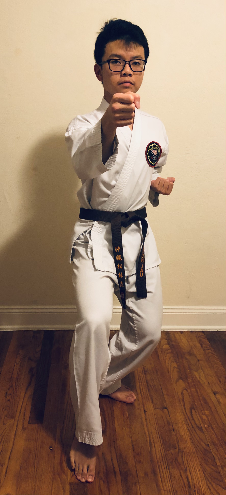

Description
Pinan Nidan, the 4th kata. Anko Itosu is the creator of this kata. The name Pinan translates to "peaceful and safe". This is the second kata of the Pinan series (2/5). The Pinan katas were adapted from older katas and made more suitable to teach younger students. This kata introduces the moves Tetsui Uke(hammer-fist block) and Low Open-hand block.
Steps
Please use desktop to view moves introduced in this kata
Moves that are introduced in this kata
D
E
F
E
N
S
E
- 